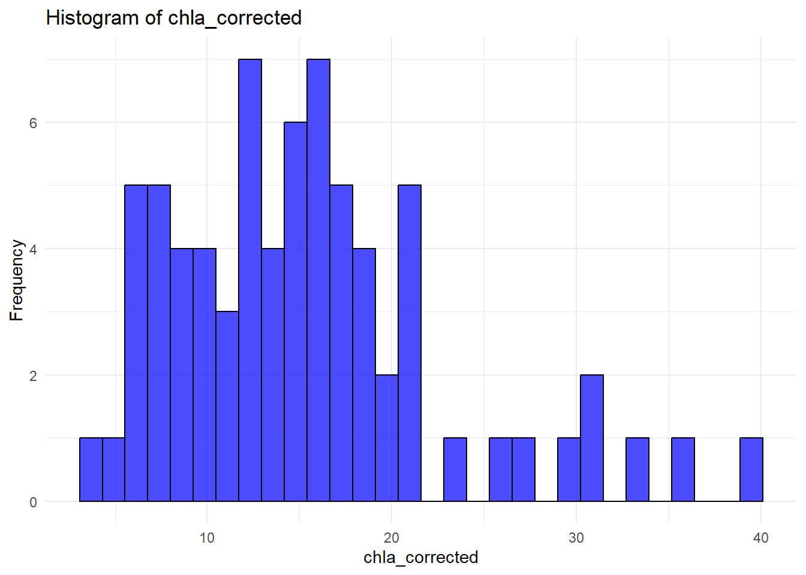

Rows: 80 Columns: 10
── Column specification ────────────────────────────────────────────────────────
Delimiter: ","
chr (3): Lake, Site, Date
dbl (7): kd, cdom_ab, TSS, chla_corrected, chla_uncorrected, secchi, DOC
ℹ Use `spec()` to retrieve the full column specification for this data.
ℹ Specify the column types or set `show_col_types = FALSE` to quiet this message.
# List of variables to checkvars_to_check <-c("kd", "cdom_ab", "TSS", "chla_corrected", "chla_uncorrected", "secchi", "DOC")# Function to test for normalitytest_normality <-function(df, variables) { normality_results <-lapply(variables, function(var) {if (is.numeric(df[[var]])) {shapiro.test(df[[var]])$p.value # Shapiro-Wilk test p-value } else {NA } })names(normality_results) <- variablesreturn(normality_results)}# Function to test for heteroscedasticitytest_heteroscedasticity <-function(model) {bptest(model)$p.value # Breusch-Pagan test p-value}# Test normalitynormality_results <-test_normality(df, vars_to_check)print("Shapiro-Wilk normality test p-values:")
# Run regression modeltot_cdom_model <-lm(kd ~ cdom_ab, data = df)# Test for heteroscedasticitylibrary(lmtest)
Warning: package 'lmtest' was built under R version 4.3.3
Loading required package: zoo
Warning: package 'zoo' was built under R version 4.3.3
Attaching package: 'zoo'
The following objects are masked from 'package:base':
as.Date, as.Date.numeric
heteroscedasticity_p_value <-test_heteroscedasticity(tot_cdom_model)print(paste("Breusch-Pagan test p-value:", heteroscedasticity_p_value))
[1] "Breusch-Pagan test p-value: 0.0160400414236523"
# If needed, transform variables if normality assumptions are violated
# Load required librarylibrary(ggplot2)# List of variables to plotvars_to_plot <-c("kd", "cdom_ab", "TSS", "chla_corrected", "chla_uncorrected", "secchi", "DOC")# Create histogramsfor (var in vars_to_plot) { p <-ggplot(df, aes_string(x = var)) +geom_histogram(color ="black", fill ="blue", bins =30, alpha =0.7) +labs(title =paste("Histogram of", var), x = var, y ="Frequency") +theme_minimal()print(p) # Print the plot}
Warning: `aes_string()` was deprecated in ggplot2 3.0.0.
ℹ Please use tidy evaluation idioms with `aes()`.
ℹ See also `vignette("ggplot2-in-packages")` for more information.
Warning: Removed 10 rows containing non-finite outside the scale range
(`stat_bin()`).
Warning: Removed 8 rows containing non-finite outside the scale range
(`stat_bin()`).

Warning: Removed 8 rows containing non-finite outside the scale range
(`stat_bin()`).
Warning: Removed 16 rows containing non-finite outside the scale range
(`stat_bin()`).
Warning: Removed 53 rows containing non-finite outside the scale range
(`stat_bin()`).
# Apply log transformation to the relevant variableslog_transformed_df <- dflog_transformed_df[vars_to_check] <-log(df[vars_to_check] +1) # Adding 1 to avoid log(0)# Test normality after log transformationnormality_results_log <-test_normality(log_transformed_df, vars_to_check)print("Shapiro-Wilk normality test p-values (after log transformation):")
[1] "Shapiro-Wilk normality test p-values (after log transformation):"
# Run regression model after log transformationtot_cdom_model_log <-lm(kd ~ cdom_ab, data = log_transformed_df)# Test for heteroscedasticity after log transformationheteroscedasticity_p_value_log <-test_heteroscedasticity(tot_cdom_model_log)print(paste("Breusch-Pagan test p-value (after log transformation):", heteroscedasticity_p_value_log))
[1] "Breusch-Pagan test p-value (after log transformation): 0.128276398087921"
# Create histograms for the log-transformed datafor (var in vars_to_plot) { p <-ggplot(log_transformed_df, aes_string(x = var)) +geom_histogram(color ="black", fill ="blue", bins =30, alpha =0.7) +labs(title =paste("Histogram of", var, "(Log Transformed)"), x = var, y ="Frequency") +theme_minimal()print(p) # Print the plot}
Warning: Removed 10 rows containing non-finite outside the scale range
(`stat_bin()`).
Warning: Removed 8 rows containing non-finite outside the scale range
(`stat_bin()`).
Warning: Removed 8 rows containing non-finite outside the scale range
(`stat_bin()`).
Warning: Removed 16 rows containing non-finite outside the scale range
(`stat_bin()`).
Warning: Removed 53 rows containing non-finite outside the scale range
(`stat_bin()`).
All data Regressions
tot_cdom_model <-lm(kd ~ cdom_ab, data = df)summary_model <-summary(tot_cdom_model)slope <-round(coef(tot_cdom_model)[2], 4)intercept <-round(coef(tot_cdom_model)[1], 4)r_squared <-round(summary_model$r.squared, 4)p_value <-round(summary_model$coefficients[2, 4], 8)reg_text <-paste0("y = ", slope, "x", " + ", intercept, "\n","R² = ", r_squared, ", p = ", p_value)ggplot(df, aes(x = cdom_ab, y = kd)) +geom_point(size =3, color ="blue") +geom_smooth(method ="lm", color ="red", se =TRUE) +labs(title ="Regression of all site kd and CDOM",x ="CDOM Absorbance",y ="kd (m-1)" ) +geom_text(aes(x =max(cdom_ab), y =min(kd), label = reg_text ),hjust =1, vjust =-1, size =3 ) +theme_minimal() +theme(axis.line =element_line(color ="black", size =1) )
Warning: The `size` argument of `element_line()` is deprecated as of ggplot2 3.4.0.
ℹ Please use the `linewidth` argument instead.
Warning in geom_text(aes(x = max(cdom_ab), y = min(kd), label = reg_text), : All aesthetics have length 1, but the data has 80 rows.
ℹ Please consider using `annotate()` or provide this layer with data containing
a single row.
`geom_smooth()` using formula = 'y ~ x'
# Run regression model for kd ~ TSStot_TSS_model <-lm(kd ~ TSS, data = df)summary_model <-summary(tot_TSS_model)slope <-round(coef(tot_TSS_model)[2], 4)intercept <-round(coef(tot_TSS_model)[1], 4)r_squared <-round(summary_model$r.squared, 4)p_value <-round(summary_model$coefficients[2, 4], 8)reg_text <-paste0("y = ", slope, "x", " + ", intercept, "\n","R² = ", r_squared, ", p = ", p_value)ggplot(df, aes(x = TSS, y = kd)) +geom_point(size =3, color ="blue") +geom_smooth(method ="lm", color ="red", se =TRUE) +labs(title ="Regression of all site kd and TSS",x ="Total Suspended Solids (TSS)",y ="kd (m-1)" ) +geom_text(aes(x =max(cdom_ab), y =min(kd), label = reg_text ),hjust =1, vjust =-1, size =3 ) +theme_minimal() +theme(axis.line =element_line(color ="black", size =1) )
Warning in geom_text(aes(x = max(cdom_ab), y = min(kd), label = reg_text), : All aesthetics have length 1, but the data has 80 rows.
ℹ Please consider using `annotate()` or provide this layer with data containing
a single row.
`geom_smooth()` using formula = 'y ~ x'
Warning: Removed 10 rows containing non-finite outside the scale range
(`stat_smooth()`).
Warning: Removed 10 rows containing missing values or values outside the scale range
(`geom_point()`).
tot_chla_model <-lm(kd ~ chla_uncorrected, data = df)summary_model <-summary(tot_chla_model)slope <-round(coef(tot_chla_model)[2], 4)intercept <-round(coef(tot_chla_model)[1], 4)r_squared <-round(summary_model$r.squared, 4)p_value <-round(summary_model$coefficients[2, 4], 8)reg_text <-paste0("y = ", slope, "x", " + ", intercept, "\n","R² = ", r_squared, ", p = ", p_value)ggplot(df, aes(x = chla_uncorrected, y = kd)) +geom_point(size =3, color ="blue") +geom_smooth(method ="lm", color ="red", se =TRUE) +labs(title ="Regression of all site kd and Chla (Uncorrected)",x ="Chlorophyll-a (Uncorrected)",y ="kd (m-1)" ) +annotate("text", x =max(df$chla_uncorrected, na.rm =TRUE) *0.9, y =max(df$kd, na.rm =TRUE) *0.1, label = reg_text, hjust =1, vjust =0, size =3, color ="black") +theme_minimal() +theme(axis.line =element_line(color ="black", size =1) )
`geom_smooth()` using formula = 'y ~ x'
Warning: Removed 8 rows containing non-finite outside the scale range
(`stat_smooth()`).
Warning: Removed 8 rows containing missing values or values outside the scale range
(`geom_point()`).
tot_chla_model <-lm(kd ~ chla_corrected, data = df)summary_model <-summary(tot_chla_model)slope <-round(coef(tot_chla_model)[2], 4)intercept <-round(coef(tot_chla_model)[1], 4)r_squared <-round(summary_model$r.squared, 4)p_value <-round(summary_model$coefficients[2, 4], 8)reg_text <-paste0("y = ", slope, "x", " + ", intercept, "\n","R² = ", r_squared, ", p = ", p_value)ggplot(df, aes(x = chla_corrected, y = kd)) +geom_point(size =3, color ="blue") +geom_smooth(method ="lm", color ="red", se =TRUE) +labs(title ="Regression of all site kd and Chla (Corrected)",x ="Chlorophyll-a (Corrected)",y ="kd (m-1)" ) +annotate("text", x =max(df$chla_corrected, na.rm =TRUE) *0.9, y =max(df$kd, na.rm =TRUE) *0.1, label = reg_text, hjust =1, vjust =0, size =3, color ="black") +theme_minimal() +theme(axis.line =element_line(color ="black", size =1) )
`geom_smooth()` using formula = 'y ~ x'
Warning: Removed 8 rows containing non-finite outside the scale range
(`stat_smooth()`).
Warning: Removed 8 rows containing missing values or values outside the scale range
(`geom_point()`).
Station Average Normality Tests
library(dplyr)# Calculate means for each Sitemean_values <- df |>group_by(Site) |>summarise(mean_kd =mean(kd, na.rm =TRUE),mean_cdom_ab =mean(cdom_ab, na.rm =TRUE),mean_TSS =mean(TSS, na.rm =TRUE),mean_chala_corrected =mean(chla_corrected, na.rm =TRUE),mean_chla_uncorrected =mean(chla_uncorrected, na.rm =TRUE))head(mean_values)
# List of variables to checklibrary(lmtest)# Variables to checkvars_to_check <-c("mean_kd", "mean_cdom_ab", "mean_TSS", "mean_chala_corrected", "mean_chla_uncorrected")# Function to test for normalitytest_normality <-function(df, variables) { normality_results <-lapply(variables, function(var) {if (is.numeric(df[[var]])) {shapiro.test(df[[var]])$p.value # Shapiro-Wilk test p-value } else {NA } })names(normality_results) <- variablesreturn(normality_results)}# Function to test for heteroscedasticitytest_heteroscedasticity <-function(model) {bptest(model)$p.value # Breusch-Pagan test p-value}# Test normalitynormality_results <-test_normality(mean_values, vars_to_check)print("Shapiro-Wilk normality test p-values:")
# Run regression modeltot_mean_cdom_model <-lm(mean_kd ~ mean_cdom_ab, data = mean_values)# Test for heteroscedasticityheteroscedasticity_p_value <-test_heteroscedasticity(tot_mean_cdom_model)print(paste("Breusch-Pagan test p-value:", heteroscedasticity_p_value))
[1] "Breusch-Pagan test p-value: 0.826757355186091"
library(ggplot2)# List of mean variables to plotvars_to_plot <-c("mean_kd", "mean_cdom_ab", "mean_TSS", "mean_chala_corrected", "mean_chla_uncorrected")# Create histogramsfor (var in vars_to_plot) { p <-ggplot(mean_values, aes_string(x = var)) +geom_histogram(color ="black", fill ="blue", bins =30, alpha =0.7) +labs(title =paste("Histogram of", var), x = var, y ="Frequency") +theme_minimal()print(p) # Print the plot}
Warning: Removed 1 row containing non-finite outside the scale range
(`stat_bin()`).
Warning: Removed 1 row containing non-finite outside the scale range
(`stat_bin()`).
Station Average Original Regression Analysis
# Assumption in using the station averages is that each station is independent from the others. Some may not see this as the case since certain lakes have multiple stations with data (i.e. can stations from the same lake be considered independent from each other?) For the sake of this analysis, stations are considered independent as they have been identified by DEQ as distinct and separated monitoring locations within the reservoirs.
model <-lm(mean_kd ~ mean_cdom_ab, data = mean_values)# Check residual normalityshapiro.test(residuals(model))
Shapiro-Wilk normality test
data: residuals(model)
W = 0.87051, p-value = 0.05314
# QQ plot for visual checkqqnorm(residuals(model))qqline(residuals(model), col ="red")